Вместо улучшения пищеварения вы заработали себе изжогу, вздутие живота и разрушение микрофлоры?
Сыроедение!
Онлайн-марафон с Наташей Сведовой
21-дневный марш-бросок по переходу на сыроедение без срывов.
С поддержкой диетолога, натуропата и сыроеда c 13-летним опытом живого растительного питания
Старт после регистрации
Вы решили перейти на сыроедение?
или уже перешли, но...
столкнулись с трудностями перехода?
Скучаете по обычному питанию?
Не знаете с чего начать? Как не навредить себе?
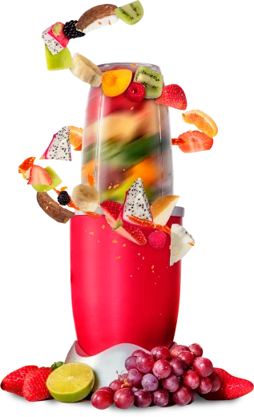
Ощущаете слабость и постоянную усталость? Ваше самочувствие ухудшилось? Ваши лицо и кожа стали серыми?
Едите много фруктов и овощей, но не наедаетесь?
Все время думаете о еде и не можете больше ни на чем сконцентрироваться?
Я очень хорошо понимаю вас!
До того, как я стала опытным сыроедом, я прошла огромный тернистый путь. В тот момент, весь интернет пестрил советами о правильном сыроедении, но когда я начинала их слушать, то становилось только хуже. Я не понимала, кому стоит верить, а кому нет…
Методом проб и ошибок, я пришла к идеальному балансу, который позволяет мне и по сей день быть в оптимальной форме.
Этот же путь под моим руководством прошло много людей, полностью изменив свою жизнь.
Сейчас, когда я богата опытом пройденного пути, я с грустью наблюдаю за людьми, которые допускают те же самые ошибки, разрушают свое здоровье сыроедением, а потом всем вокруг говорят, что сыроедение - это вред.
Поэтому я хочу поделиться с вами своим опытом!
Меня зовут Наташа Сведовая.
—
Сертифицированный детокс-коуч, диетолог, нутрициолог, натуропат, остеопракт и телесно-ориентированный терапевт, автор уникальных методик восстановления здоровья женщин, мужчин и детей, практик йогатерапии и йоги, гипнотерапевт, идеолог и основатель школы чистоты и красоты Urban Queen, экологичная мама, основатель бренда BIOпродуктов @Priroda.Food. Обучила и помогла восстановить здоровье и вернуть энергию жизни более 15000 ученикам по всему миру.
Опыт сыроедения - 13 лет.
Представьте, вы перешли на сыроедение и:
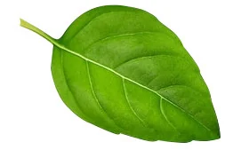
Вы не испытываете никакого дискомфорта в области живота (вздутия, изжоги и т.д.)
У вас нет проблем с зубами: выпадения, болей в деснах, кариеса и т.д.
Ваши волосы крепки и шелковисты, вы не страдаете от их выпадения.
Ваше лицо имеет здоровый румяный оттенок, а не серость и бледность
Вам не хочется срываться, объедаться, ваши мысли не сконцентрированы только на еде.
И вы не чувствуете на себе негативных последствий от перехода на сыроедение
Думаете, это невозможно?
Вам поможет онлайн марафон
"Сыроедение"
Вас ждет:
Супер-полезные рецепты на каждый день.
Сыроедение - это не только полезно, но и вкусно. У вас будет огромное разнообразие рецептов, которыми вы сможете порадовать как и себя, так и своих близких
Составление индивидуальной программы
Вы узнаете, какие фрукты, овощи, подходят именно вам, от чего, вам стоит отказаться, например, если у вас есть какие-то болезни.
21 день обучения с поддержкой кураторов школы.
Они будут отвечать на все ваши вопросы, и проблемы сыроедения будут закрыты для вас. Поддержка ведется ежедневно
2 онлайн трансляций лекций
Вся информация в одном месте. Вы сможете задавать вопросы в прямом эфире и я на них отвечу.
Если же вас не будет на вебинаре, то вы просто можете заранее скинуть ваш вопрос и я также на него отвечу
Вам больше не нужно искать кусочки информации по всему интернету.
Моя система полностью структурирована и самодостаточна. Вы получите всю информацию о сыроедении в одном месте из первых уст.
Вместе мы закроем все вопросы по вашему питанию.
Чему вы научитесь на МАРАФОНЕ?
Программа курса:
День 1. Получение доступа к курсу и вводным урокам. Знакомство с участниками курса.
День 2. Рассылка правильного гурманского меню. Какие продукты надо приобрести для марафона. К ак заменить привычные вареные блюда на более полезные сырые и зачем это нужно. Все о переходном периоде, его трудностях и радостях.
День 3. Важнейшие правила сочетаемости продуктов на сыроедении, без которых никуда. Кислотная и щелочная среда.
День 4. Жор на сыроедении и вздутие живота. Почему мы кусочничаем и срываемся.
День 5. Физическая активность и сыроедение. Без чего немыслимо сыроедение. Важнейшие техники детокса в домашних условиях.
День 6. Мотивация и вдохновение для успешного сыроедения.
День 7. Второй вебинар. Будем говорить о сочетаемости продуктов и обсудим планы на следующую очистительную неделю. Что такое структурированная вода. Ответы на ваши вопросы.
День 8. О пищевой пирамиде сыроеда.
День 9. В чем сила сырой растительной пищи и как она исцеляет ваши болезни каждый день. Методы исцеления сырой пищей и вспомогательные методы.
День 10. Подготовка к очистительной практике.
День 11. Что такое структурированная вода, как ее готовить дома. Растительная вода – лучший лекарь. Сокотерапия - это важно и эффективно.
День 12. Схема проведения очищения. Как голодать, если вы на работе.
День 13. Польза и преимущества сухого голодания. Рассылка меню на следующую неделю.
День 14. Вебинар "Все о сокотерапии и живой растительной воде". Сокотерапия при различных заболеваниях. О всех методах обработки пищи на сыроедении.
День 15. Ферментация продуктов.
День 16. Эфирные масла для сыроедов.
День 17. Жиры белки углеводы, Б12, Омега, цинк - как получать от пищи ВСЁ. Как научиться готовить правильную сыроедческую пищу без подсказок.
День 18. Срывы в гостях.. что делать и как с этим жить?
День 19. Р ассылка меню на третьей неделе.
День 20. Как правильно питаться в путешествиях, в офисе, в неправильно питающейся семье в гармонии с собой.
День 21. Вебинар «Как сделать сырую кухню нормой жизни и методом исцеления даже если вы не планируете быть сыроедом всегда". Планирование на будущее.
А если мы поймём из вашей анкеты, что вам сыроедение противопоказано, то мы подберём для вас специальное питание вне сыроедения.
Вы спросите:
“ А если я не хочу переходить на сыроедение?”
Если вы хотите провести очищающее сыроедение, а потом вернуться к привычному типу питания, то я составлю для вас специальную очищающую программу, в которую будут входить рекомендации:
Чем нужно питаться на очищающем сыроедении
Как подготовиться к очищающему сыроедению.
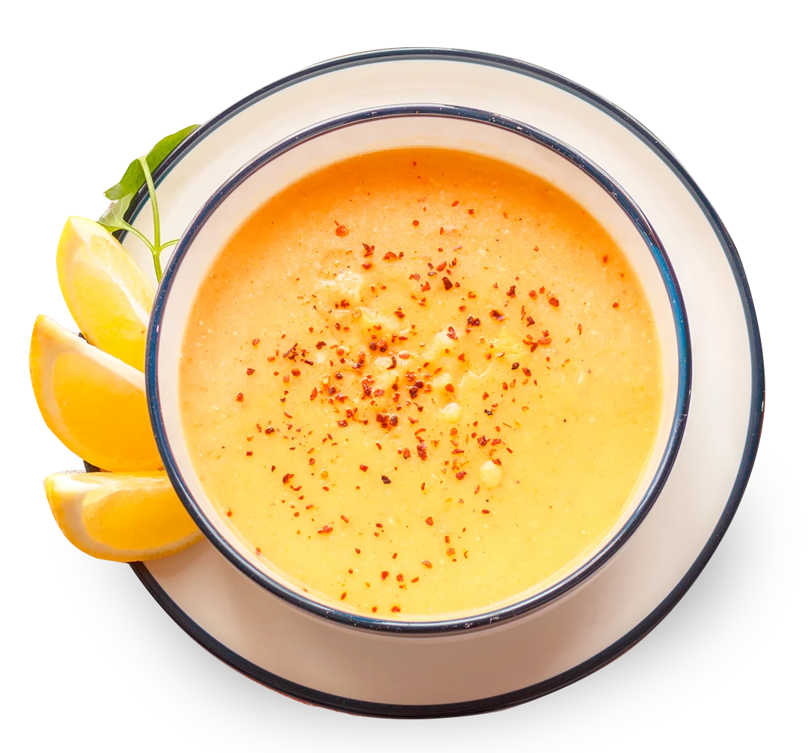
Чем питаться дальше после очищающего сыроедения.
Как выходить с очищающего сыроедения, чтобы не создать для вашего организма сильного стресса
Одно я могу вам сказать точно:
П осле этого курса, ваш рацион кардинально поменяется, даже если вы в дальнейшем сохраните свой тип питания.
Курс можно приобрести в рассрочку!
Мы можем предложить 2 вида рассрочек: внутреннюю и банковскую.
По внутренней рассрочке платёж разбивается на 2 равные части: 50% в начале и 50% через 10 дней после оплаты.
Банковская рассрочка доступна от банка партнёра на 3, 4, 6, 10 или 12 месяцев.
Рассрочка без переплат!
тарифы:
Сыроедение
Участие в онлайн марафоне "Сыроедение"
_____
Рецепты
+
Диагностика
+
2 онлайн трансляций и видеозаписи
+
Участие в клубе
«Ведание»
на 1 месяц
17990 руб
13 900 ₽
Индивидуальное наставничество
✔️ Поддержка с Наташей Сведовой и всей командой школы UrbanQueen в закрытом чате
✔️ Индивидуальные консультации по видеозвонку;
✔️ Доступ ко всем необходимым программам и материалам на постоянной основе
✔️ Разработка индивидуального плана очищения и питания
✔️ Рекомендации по образу жизни
✔️ Индивидуальные практики по запросу
✔️ Терапевтические сессии с психологом
280000 руб
240000 руб
Если в первый день конференции вы поймете, что подача материала вас не удовлетворяет, мы вернем вам 100% средств!
Отзывы о марафоне
Анна Артемьева
Ксения Зенкова
Елена Арапова
Надежда Серебрякова
Марина Толстова
Лариса Аинцева.
Ксения Васильева
Aleksei Savin
Лариса Шигарова
Екатерина Голубева
Дарья Савина
Виктор Некифоров
Еще отзывы
Добрый день! Меня зовут Елена Арапова, мне 35 лет.
Я проходила у Наташи Сведовой марафоны: «Капитальное весеннее очищение», «Сыроедение с антипаразитарной программой».
Хочу сказать, что эти марафоны перевернули мое сознание, это просто что-то потрясающее. Я как-будто на весь мир и себя стала смотреть по-другому, появилось новое чувствование, как-будто проснулась от спячки и ощутила живой мир вокруг себя!!! Это невероятно, мощно, до мурашек!!!
Наташа очень многогранный человек с глубокими теоретическими знаниями и очень обширным практическим опытом. Обучение идет комплексно, затрагивая все сферы нашей жизни. Ведь именно так и только так можно восстановить свое здоровье, восстановить гармонию жизни!
Я только вначале своего пути, но уже ощутила на себе благостные перемены: энергии стало в разы больше, огонь жизненный разрастается, растут желания и мотивация двигаться, делать, развиваться, оздоравливаться, расти духовно! Наташа дает очень много практик, которые применимы в самых разных ситуациях, которыми всегда можно помочь себе самой!
Я очень счастлива, что решилась и пришла на Наташины марафоны и теперь следую дальше!
Выражаю огромную благодарность и признательность Наташе и всей ее команде за знания, за труд, за поддержку, дружественную атмосферу, самоотдачу, высокое качество работы, разжеванные ответы на вопросы (порой выходящие далеко за пределы марафона), индивидуальные рекомендации и огонь, который Наташа зажигает своей любовью, страстью к жизни, к своему делу, к людям! Люблю Вас!!! 🥰❤❤❤
Елена Арапова
Меню, которое мне было так нужно, потому что к моменту запуска марафона я уже была на сыроедении и мои рецепты уже иссякли, что делать дальше было не ясно. И мне как уже не в первый раз было очень приятно и внутри я очень ей благодарна, за то, что она «так прозорливо» предусмотрела с первого дня меню. И как обычно индивидуальный подход и быстрые ответы на вопросы. В вк очень быстро стали отвечать, я поняла, потому что этот марафон проводился с помощником. И хоть я не полностью еще изучила курс по сыроедению, потому что информации очень много, а у мня времени не так много, но все же за курс я очень благодарна! Это меня сподвигло значительно больше уделять времени спорту, я стала делать соки и смузи по рекомендациям Наташи и как результат, у меня отличное самочувствие, хотя первую неделю в голове был вообще вертолет, т.е. постоянно кружилась голова, да так сильно, чего было даже на голодании! Считаю Наташу отличным специалистом по оздоровлению и человеком с замечательными качествами, в том плане, что она подходит к своему проекту в полной мере с ответственностью к каждому человеку, сообщая максимум нужной информации!!!
Наташа, спасибо вам большое! И низкий поклон за ваши передачу ваших знаний!
Тут надо еще сказать, что я отслеживаю и других лекторов и различные школы по оздоровлению, анипаразитарке и сыроедению, и то что у Наташи приемлемые цены, это тоже очень приятно! Сразу отдать более 10 тыс. руб. за курс, я бы решилась незнакомым людям. А у нее и цены и приемлемые и результат на сегодня для меня уже понятный!
Еще раз Наташа большое Вам спасибо за ваши труды! То, что вы делаете действительно очень важно и нужно для оздоровления меня и других людей! Потому что конечно я же делюсь информацией и с родственниками и с друзьями! (правда сыроедение никто не принимает), только инфо по антипаразитарке и сочетанию продуктов, что тоже хорошо))) СПАСИБО!!!
Марина Толстова
Очень благодарна Наташе за интересный курс, много полезной и реально необходимой информации. Спасибо за вкусные рецепты. Муж остался очень доволен.😊 Планирую принять участие также в курсе Мата. В подарок хотелось бы получить курсы по мужскому и женскому здоровью, чтобы комплексно разобраться в этом вопросе.
Ксения Синявская
Благодарю Наташу и её помощников за проведение марафона, постоянную поддержку, красивые и содержательные посты, четкую формулировку информации в видео и за возможность стать здоровее, красивее, увереннее в себе❤🙏🌞🤗! Самым сложным для меня является усвоение и внедрение в свою жизнь чего-то нового (перфекционизм и мнительность немного мешают😌), успевать за всей информацией. Потому очень рада тому, что доступ к материалам марафона останется надолго. Самым приятным было то, что я на первой неделе ощутила влияние на организм правильного сбалансированного питания - лицо стало почище, вздутие ушло. А всего-то надо было узнать, как сочетать продукты, во сколько их есть, и с каким интервалом🤓, как правильно дышать, пить соки и много других нюансов, которые очень важны. Я пока совсем не сыроед, в ближайший год не планирую переходить на 100%, мне больше комфортнее когда немного вареной (вкусной, свежеприготовленной, правильно сбалансированной) пищи есть в рационе на обед😌😊. Рекомендации планирую включить в свою жизни ВСЕ, но постепенно (пока внедряю каждую неделю что-то новое - и каждый раз мне всё больше нравится результат😁). Хоть марафон и закончился, но для меня путь налаживания питания и внутреннего оздоровления только начинается🤗❤🍒🥕🍋🍏
Надежда Серебрякова-Бадя
Я прошла четыре марафона Наташи Сведовой: «Антипаразитарная программа, Гастрономическая революция, Марафон по Весеннему очищению и Марафон по Сыроедению. Это очень крутые и мощные марафоны, которые не оставят Вас равнодушными и смогут пробудить к тому, чтобы Вы не просто прошли их и забыли, а могли следовать им в процессе Вашей жизни. Тому яркое подтверждение, сама Наташа! Это человек, который не просто рассказывает теорию из учебников, а именно тот человек, который делится своим опытом. Я очень благодарна, что есть такие люди, как Наташа, которые уже исследовали этот Новый путь и на основе своих проб и ошибок создают более легкие пути жизни и развития. Наташа очень яркая, энергичная, позитивная, когда смотришь её вебинары, то заряжаешься этой волной и хочется уже не сходить с этого пути. Также хотела бы поблагодарить и команду Наташи: Анну Полын и Станислава Осипова. Вы большие молодцы, спасибо Вам за оперативную и своевременную работу по всем вопросам. Я желаю от всей души Вашей школе процветания и большое количество чистых и здоровых людей!) Ваш труд бесценен!
Ксения Зенкова
У Наташи в марафоне мне понравилось: цена- очень умеренная 2.Все обещания,весь план работы был выполнен,даже перевыполнен.3. Группа небольшая. То есть люди не гонятся за количеством.Это позволяет работать качественно. И так и было
Некоторые задания сначала кажутся невыполнимыми,несовместимыми со мной. А потом начинаешь их делать,и оказываются возможными! Например,лечь спать в 10 часов. Дисциплина,не тянуть резину,быстро доделать необходимое, одеть маску(белые ночи,Питер) и потерять сознание на всю ночь! Через три дня начинаешь чувствовать себя на каникулах, в санатории и т.п. Мне понравился сок лопуха! такой горький,сразу печень лучше работает.
Марафон хорош тем, что дает ежедневную поддержку, что то новенькое подкидывает. Ставит задачи. Заставляет посмотреть внимательнее на свою жизнь,на тело,на всё вокруг,на душу. Сделать что то для души,наконец-то. Отвлечься от постоянного погружения во внутренний диалог. И вот последний вебинар, дальше - самостоятельная работа.
Елена Гусева (Плютинская)
У меня так много эмоций, радости и восторга от курса, поэтому не могу молчать и пишу подробно, чтобы вдохновить других. 😊
Если я скажу, что моя жизнь разделилась на до и после, это будет чистая правда.
Это очень масштабный и беспрецедентный курс не только по сыроедению, но и по образу жизни/мировоззрению человека нового времени, живущего в согласии с природой и духом.
До Наташи я знала какие-то вещи по кусочкам - да, нужно чистить кишечник, нужно голодать, нужно правильно сочетать продукты и проходить антипаразитарку. Но из разрозненных источников и материалов других авторов получалась каша. Даже платные курсы других авторов после Натальи стали казаться очень поверхностными и недалекими, из серии “сходил на тренинг и теперь буду учить других”.
Наталья профессионал, который прекрасно знает свою тему, может объяснить и дать квалифицированный ответ на любой вопрос, присовокупив туда свой опыт, опыт участниц, своих коллег и научную базу натуропатии. Это вызывает уважение и готовность довериться.
Дарья Jagprem Kaur
Продолжение отзыва Дарьи:
У Наташи четкая база, план и при этой конкретики есть пространство для маневра, возможность подстроить любое правило под себя с комфортом. В ее исполнении сыроедение перестает быть сектой, где обычно вместо живой ситуацию тебя подгоняют под догм или даже мифов.
Наташа очень терпеливо отвечала на массу вопросов, часто повторяющихся, вникала в анкету каждого человека. Учила базе и при этом пробуждала нашу личную осознанность и интуицию. Для меня она - ответственный специалист. Ее мастерство + искреннее желания помочь людям, сейчас на вес золота в сфере инфобизнеса.
В общем, если реально хотите изменить свою жизнь, стиль питания или просто узнать как интегрировать больше растительной пищи в свой рацион, то вам на этот курс. + антипаразитарка Натальи, конечно же.
И забейте на многих хайповых raw-блоггеров или i-herb натуропатов)) .
Наташа на их фоне мастодонт.
Думаю, со временем она станет признанным классиком)
Дарья Jagprem Kaur
Продолжение отзыва Дарьи:
Конкретно мои результаты:
Было до:
- серое лицо, плохое самочувствие, слабость без причин, как следствие отсутствие спорта, непроходящие высыпания на лице и прочие неприятные симптомы.
- ощущение замкнутого круга, потому что питаться как раньше животной пищей и мучным не могла уже, но при этом оставалась привязка к сахару, мучному и некоторым животным продуктам. Как бывшему фитнес-тренеру мешали ограничения в виде подсчета ккал, БЖУ (ну нужны же медленные углеводы!), традиционный взгляд социума/врачей на питание.
Не было понимания “Как можно иначе?” и ощущение тупика.
В процессе: по хьюман дизайну был определен мой тип питания, диагностика состояние здоровья по лицу и языку, даны рекомендации по моим симптомам, выявлен недостаток витамина Д, который мешал мне полноценно жить.
После: За три недели марафона я, уделив максимум внимание заданиям, поняла такие вещи о по-настоящему здоровом образе жизни, которые взровали мой мозг и развернули возможности жизни на 360 градусов. И о них я не от кого раньше не слышала)
Дарья Jagprem Kaur
Продолжение отзыва Дарьи:
Я чувствую себя с каждый днем все лучше, бодрее, сильнее и радостнее. Восстановила физ нагрузку на тело через любимый велосипед, медитации на солнечную энергию, живое питание, от которого легко в теле и радостно на душе, правильное сочетание продуктов, заметно очистившееся лицо.
И главное, я сама в постоянном удивлении, но я замечательно функционирую на растительном питании без необходимости что-либо варить или есть мясное, не испытываю никакой тяги к пицце (хотя два месяца назад объедалась хачапурями и пиццами), сладкие торты способны вогнать в скуку. Зато на сочные фрукты, соки и пророщенную гречку у меня “стоит”)
И да, если вдруг я захочу вернуться обратно (что сомнительно), благодаря Наталье я знаю как это сделать грамотно.
У меня есть уверенность в завтрашнем дне, потому что я начала лучше чувствовать свое тело, его истинные желания (а не паразитов), знаю о фундаменте естественного оздоровления и питания. Я так много получила, что каждый день думаю, как мне повезло встретить проект “Urban queen” и попасть на курс
по “сыроедению”. Это инвестиция круче биржевой торговли, проценты возвращаются огромные в виде собственного здоровья)
Дарья Jagprem Kaur
Продолжение отзыва Дарьи:
Еще скажу, что учителя могут быть разные, но благообразные учителя - это вдвойне приятно.
Наталья вдохновляет - красивая, радостная, естественная, чуткая, живой пример удачного 7-летнего сыроедения и интересного жизненного пути! Рядом с таким человеком растешь быстрее и берешь в пример не только тип питания.
Посылаю благодарность и любовь Наталье и всей ее команде! ❤ Спасибо вам за поддержку все три недели без остановки, вам вернется десятикратно.
Желаю школе процветания и стать лидером на рынке.☀Тогда больше людей, кому реально нужно, научаться сыроедить грамотно, без побочек и откатов,
либо поймут, что им на всю жизнь не надо и освоят азы правильного очищающего растительного питания на теплое время года.
Дарья Jagprem Kaur
Анна Полын
Раньше я не могла продержаться на сыром больше пары дней, не хватало разнообразия. А муж вообще не представлял себя на чистках и диетах. Но на курсе Наташи очень мудрая стратегия: первая неделя гурманская с кучей великолепных рецептом. Мы с мужей кайфовали и будто в изысканном ресторане питались неделю, тратя при этом минуты на приготовление. К концу недели уже даже подустали немного от этого изобилия и как раз вторая и третья неделя были на простой, но тоже очень вкусной еде. Благодаря этой хитрости мы выдержали и остались очень довольны. Муж постройнел, и с тех пор спокойно выдерживает чистки и диеты, а это, на мой взгляд, обязательно для счастья. У меня стала более упругой и очистилась кожа. Бодрость и хорошее настроение были с нами еще долго. Но главное, что мы обрели прекрасный инструмент оздоровления и влюбились в сырую пищу!
Марафон-сыроедение. Мой фидбэк)
Пришёл на марафон с намерением набрать пласт недостающих знаний. Не прогадал)
На курсе Наталья виртуозно выдавала объяснения, откуда, что и зачем берётся))
Ответы на вопросы участников марафона - вне всех похвал. Всё ясно и чётко изложено.
Отдельно хочется отметить то, как Наталья чутко и вдумчиво реализует индивидуальный подход к каждому. Там всё, и диагностика, и рекомендации. 👍
Понимаю, что ужать все свои знания в этот марафон Наталья не смогла. Поэтому присматриваю себе иные курсы в её арсенале. Качество полностью удовлетворяет.
Aleksei Savin
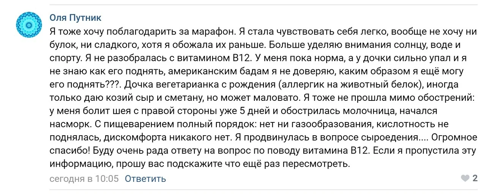
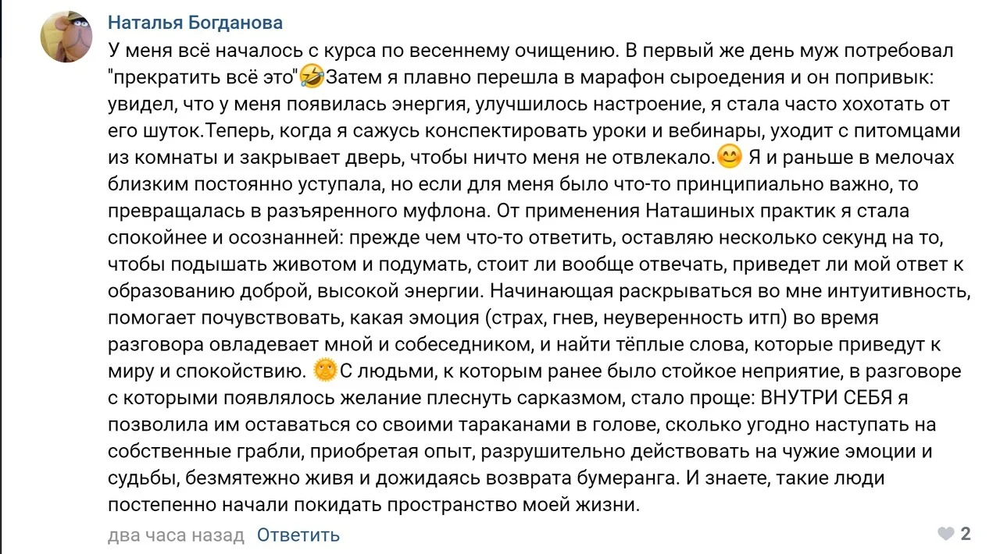
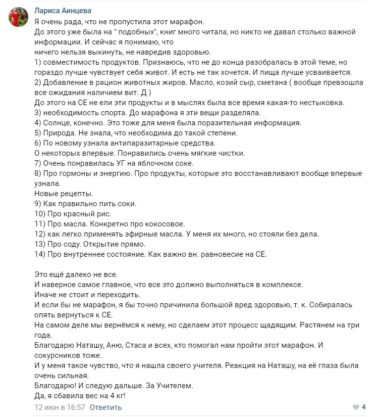
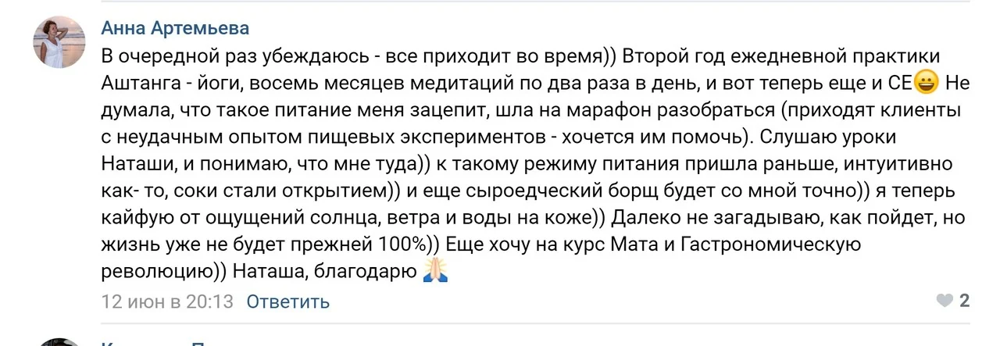
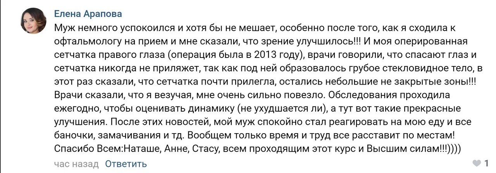
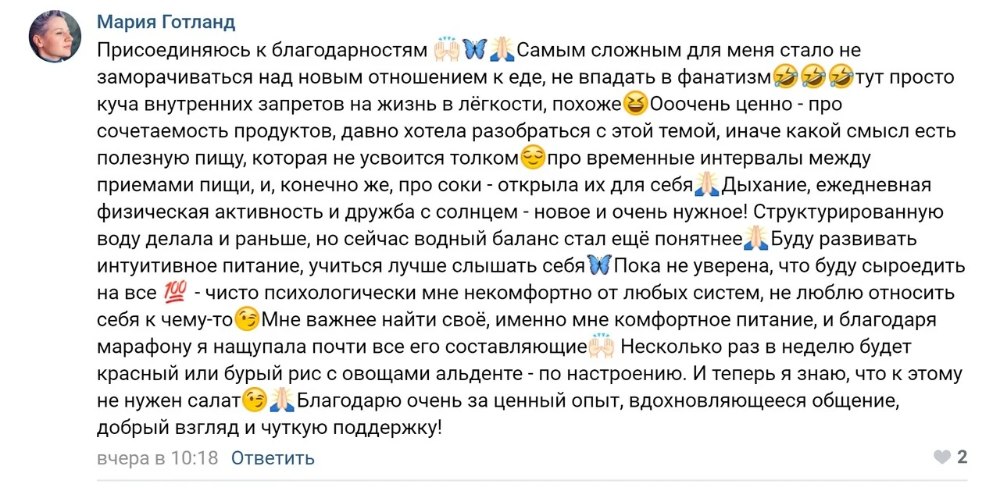
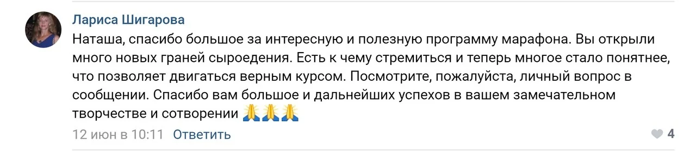
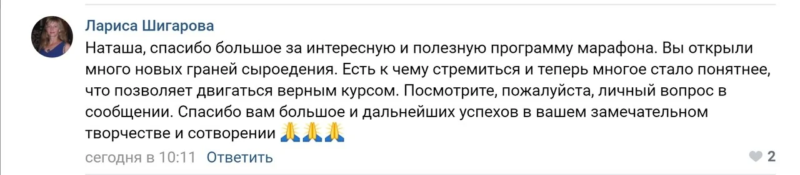
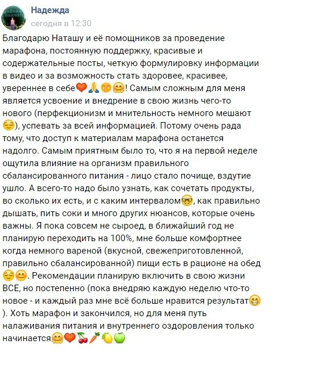
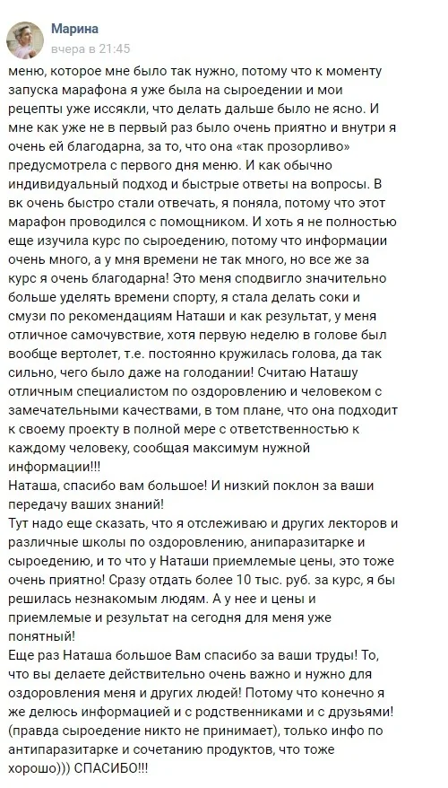
Лето - это самое время для перехода на сыроедение. Ведь впереди вас ждет изобилие фруктов и овощей.
Записывайтесь сейчас, чтобы не упустить сезон!